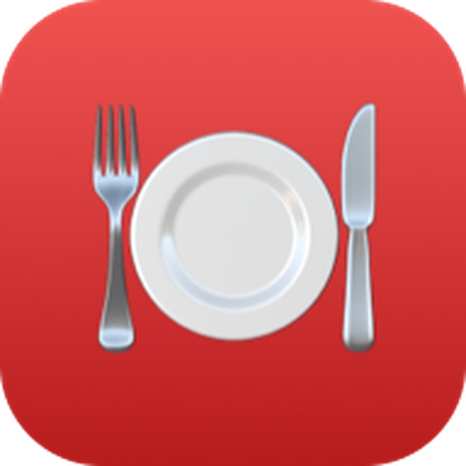
Do cadastro até a primeira comanda fechada: a ordem de configurar, o dia a dia do salão e do caixa, e as dúvidas mais comuns.
Em comandapro.luqsys.com.br/cadastro: nome do restaurante, seu nome, WhatsApp, e-mail e senha. São 3 dias grátis, sem cartão. Quem cria a conta entra como Administrador.
No navegador do celular ou do computador: comandapro.luqsys.com.br.
Depois de entrar, toque em 🔐 Face ID no topo. Na próxima vez, use Entrar com Face ID. Vale pro aparelho onde foi ativado. A senha continua valendo.
O administrador (ou o gerente) coloca uma senha nova em Usuários → Editar, pra qualquer pessoa da equipe e pra si mesmo. Se o próprio administrador esqueceu, fale com o suporte no WhatsApp.
Abra comandapro.luqsys.com.br/instalar e siga o passo a passo do iPhone ou do Android. O ComandaPro fica com ícone na tela de início, igual um aplicativo.
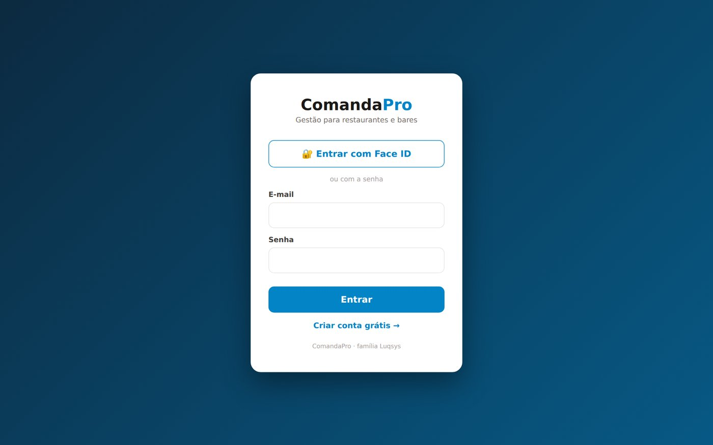
Faça nesta ordem uma vez só. Depois é só abrir o caixa e trabalhar.
Em Ajustes: nome, razão social, CNPJ, endereço e telefone. Esses dados saem na nota fiscal.
Também em Ajustes. A conta já nasce com 10% de taxa e o ambiente Salão, mesas de 1 a 20. Crie outros ambientes (Varanda, Deck) com a faixa de mesas de cada um.
Em Cardápio, crie as categorias (Bebidas, Porções, Lanches) e depois os produtos com preço.
Em Usuários, um login pra cada pessoa, com o perfil certo e a comissão do garçom.
A impressão da cozinha e do caixa usa um programa no computador Windows da loja. Fale com o suporte pra instalar e depois escolha as impressoras na tela Impressora.
Na barra do topo, Abrir caixa com o troco inicial. Aí o botão + Nova comanda libera.
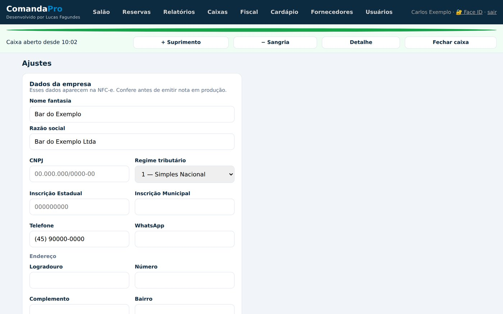
O Salão mostra as comandas abertas, com o total, a quantidade de itens e quantos ainda estão na cozinha. Ele se atualiza sozinho, então todo mundo vê a mesma coisa.
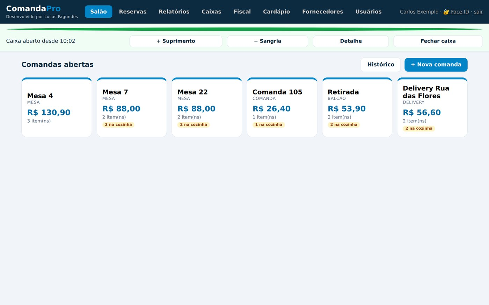
Cada mesa tem uma comanda aberta por vez.
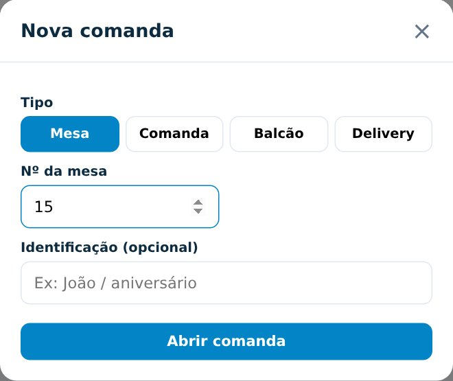
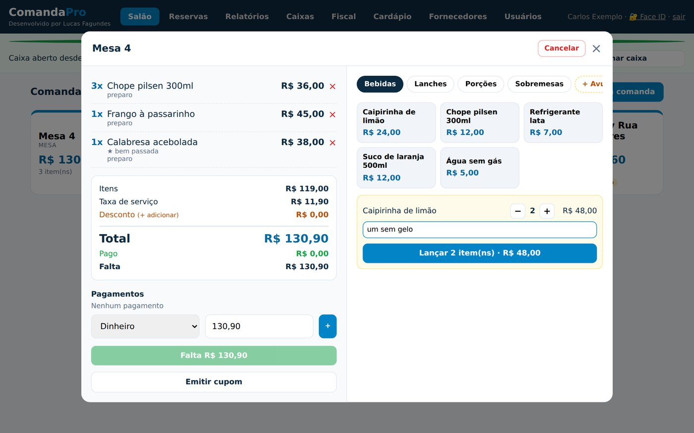
No celular a tela é a mesma. Cada um entra com o próprio login, e o que um lança o outro vê. O garçom vê só o Salão: abre comanda, lança e recebe, mas não cancela comanda nem vê relatórios, caixas ou notas.
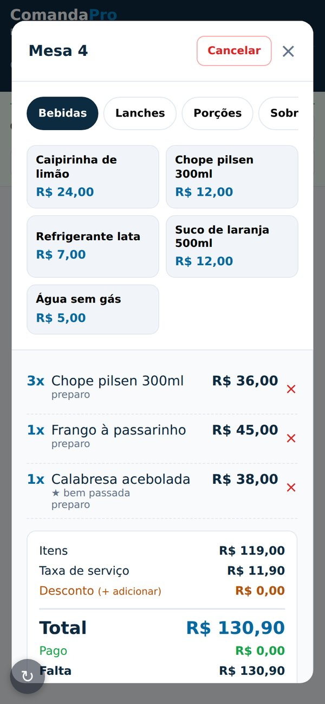
| Abrir | Barra do topo → Abrir caixa → troco inicial. Sem caixa aberto não abre comanda. |
| Suprimento e sangria | + Suprimento pro dinheiro que entra, − Sangria pro que sai, sempre com o motivo. |
| Detalhe | O que entrou em cada forma de pagamento e os movimentos do turno. |
| Fechar | Fechar caixa: digite quanto contou em cada forma, confira a diferença e Confirmar fechamento. Só fecha com todas as comandas fechadas ou canceladas. |
| Conferência | Administrador e gerente veem em Caixas todos os caixas fechados, esperado e contado, e marcam como conferido. |
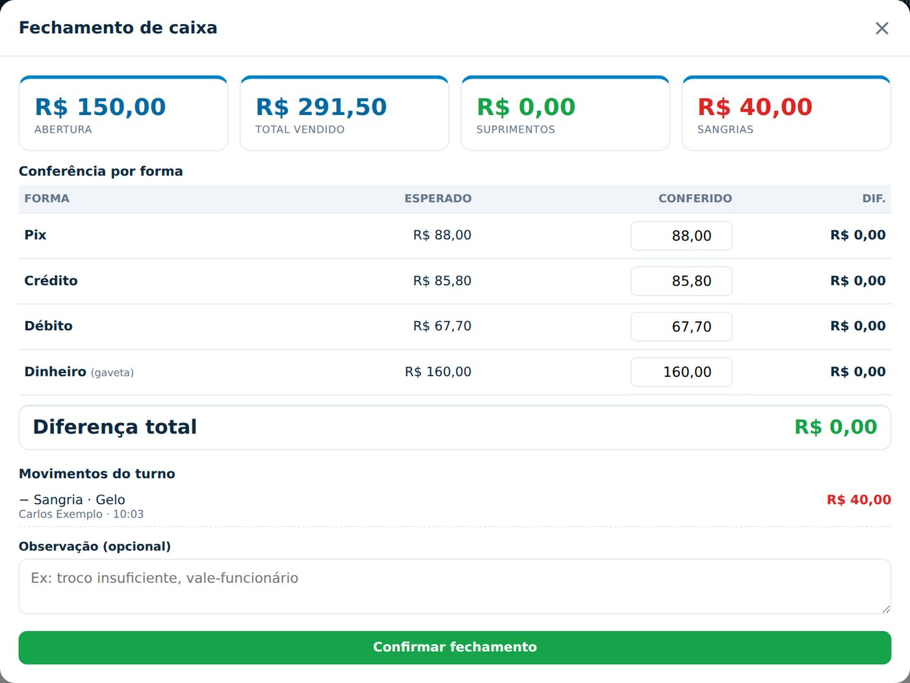
Abra Cozinha num tablet ou TV. Cada item lançado aparece com a mesa, o tempo de espera e a observação. Toque em Em preparo e depois em Pronto ✓. A tela se atualiza sozinha.
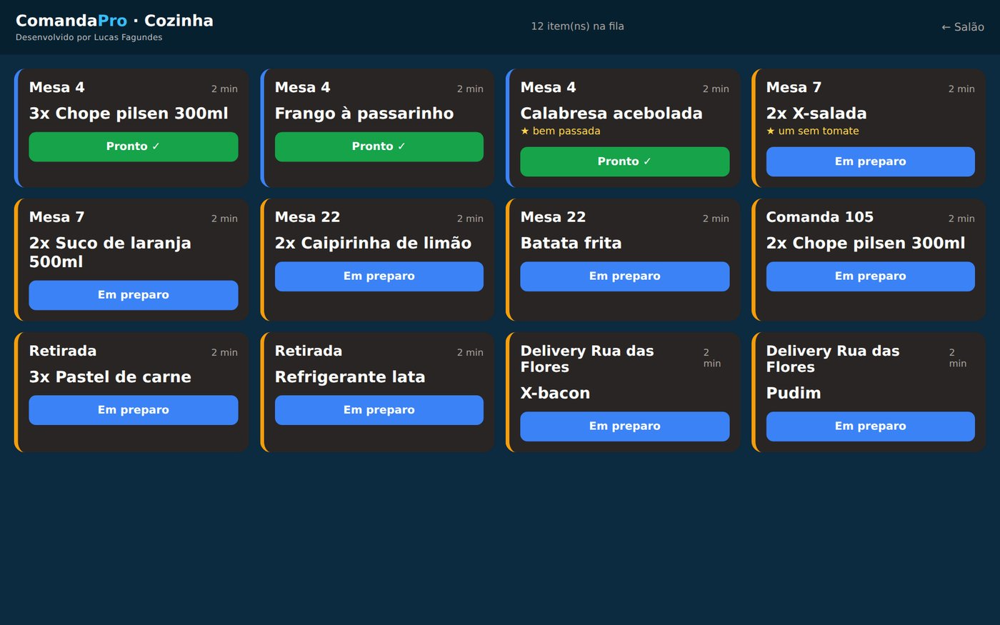
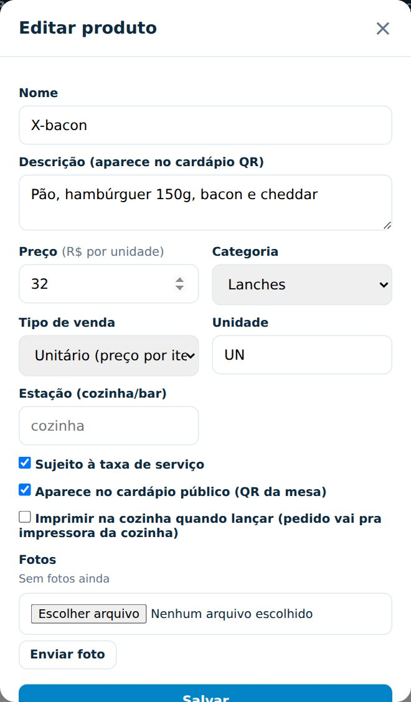
Hoje, 7 dias, Mês ou as datas que quiser: faturamento, comandas, ticket médio, vendas por forma de pagamento, mais vendidos, comissão por garçom e a lista das vendas.
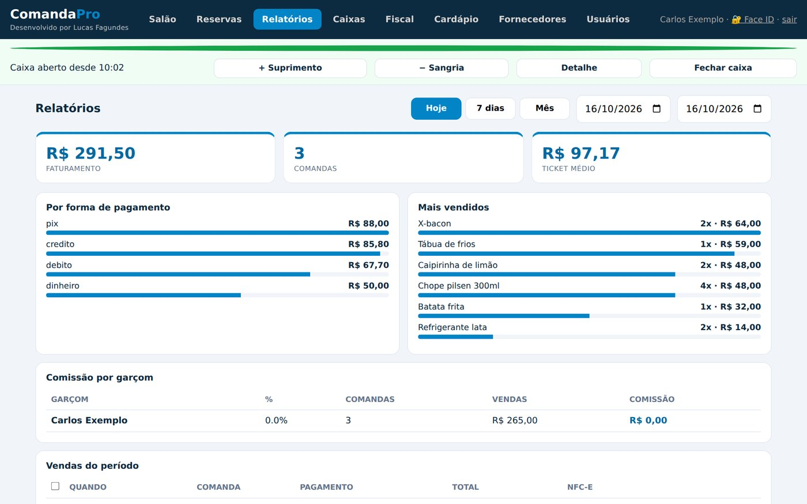
| Reservas | + Nova reserva: cliente, telefone, data, hora, pessoas, mesa e observação. Depois, status Concluída, Cancelada ou No-show. |
| Usuários e perfis | Garçom: só o Salão. Caixa: o dia a dia, menos Usuários e a conferência de Caixas. Cozinha: pra tela da Cozinha. Gerente e Administrador: tudo. |
| Fornecedores | Nome, CNPJ ou CPF e telefone. |
| Auditoria | Ajustes → Ver trilha de auditoria: quem cancelou item, deu desconto ou mexeu no caixa. |
A nota não sai da tela da comanda, pra ninguém emitir sem querer. Cancelar nota é com gerente ou administrador.
Em Ajustes → Gateway de pagamento, escolha Mercado Pago, Stone (via Pagar.me) ou InfinitePay e cole as credenciais da sua conta. A comanda ganha o botão Gerar QR PIX. Com InfinitePay, dá também pra cobrar crédito e débito por aproximação no celular.